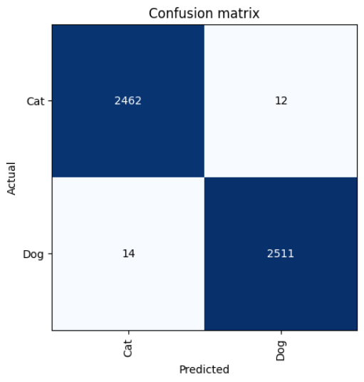
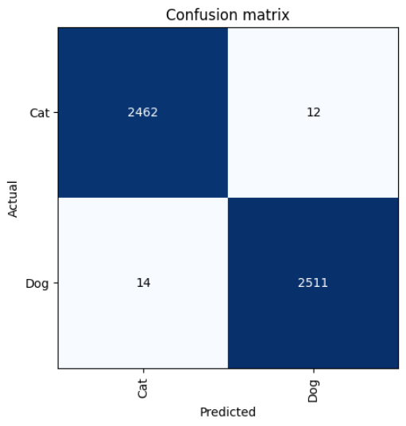
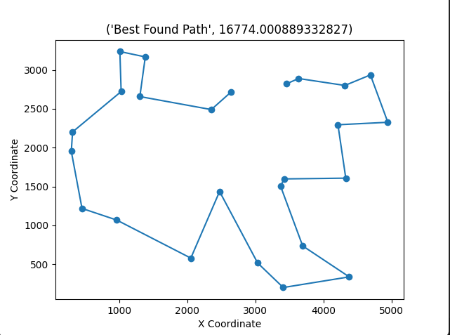
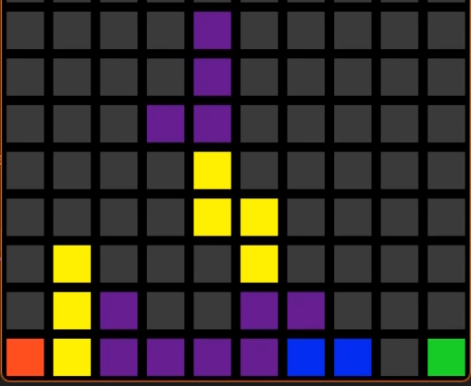
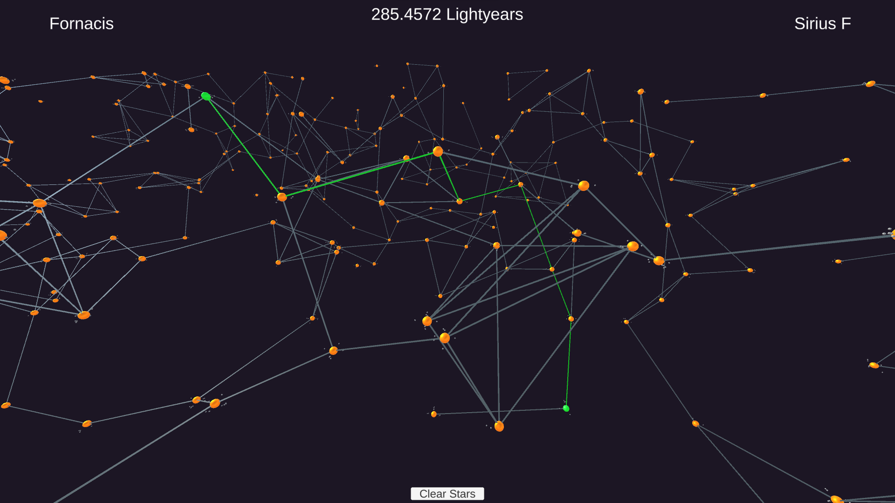
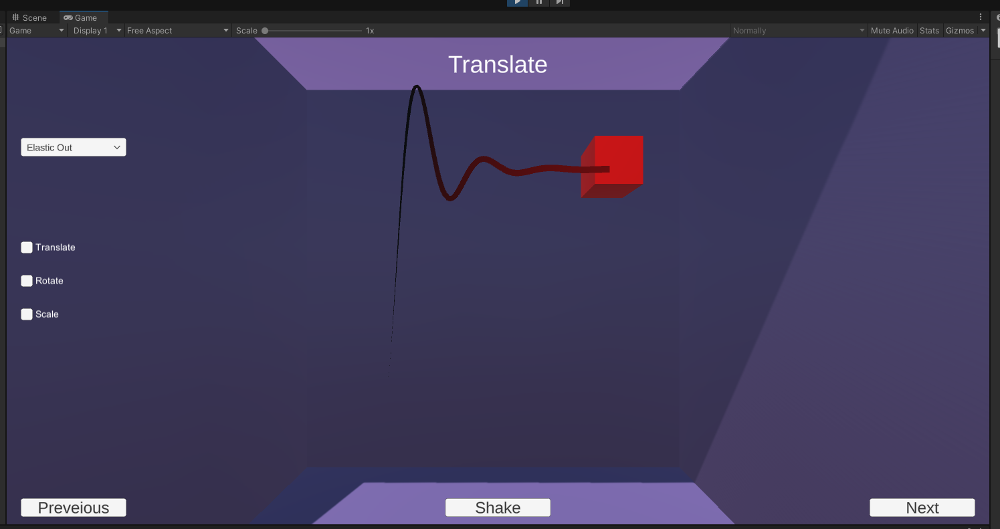
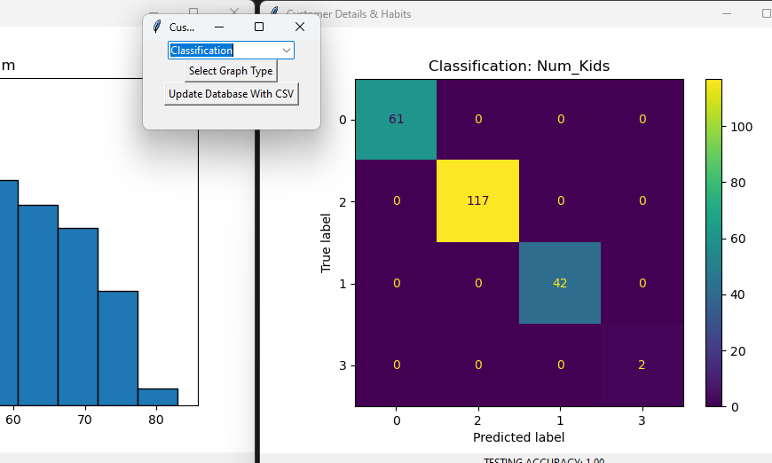

Utilising a neural network and tranfer learning to classify images of cats and dogs.
Path Optimisation
Genetic Algorithm

Using a custom build genetic algorithm to heuristically optimise the travelling salesman problem.

Recreating the classic arcade game 'Tetris' using a game engine library called playbuffer in C++.
Path Optimisation
Dijkstra's

Creating random star maps and connections between nodes then using dijkstra's pathfinding to find the best path between two selected stars in C#.

An entirely custom Linear-Interpolation library with a range of easings implemented in C# and visualised in unity.
Machine learning methods in a tkinter UI

Creating a database using a csv file then using SQl to query the data base and applying machine learning methods to analyse the data within.